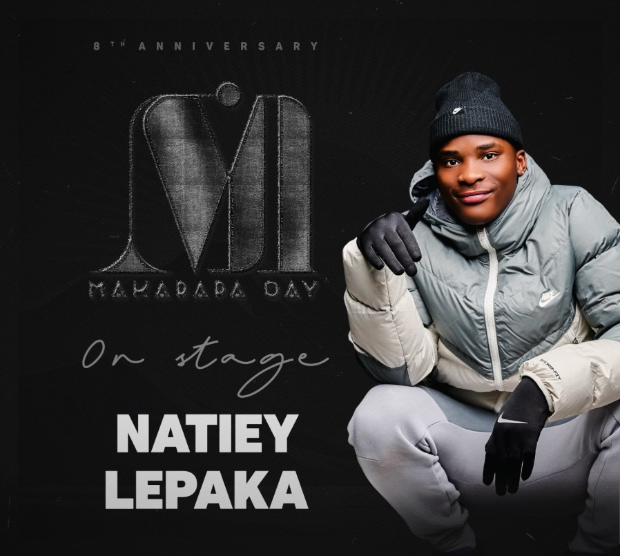
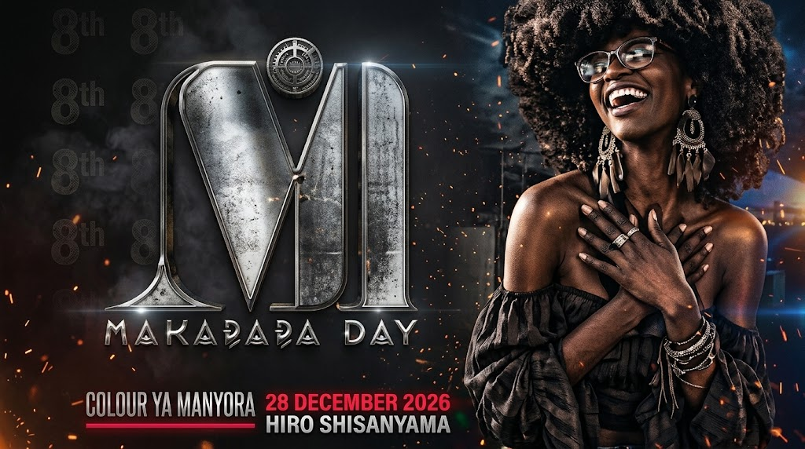
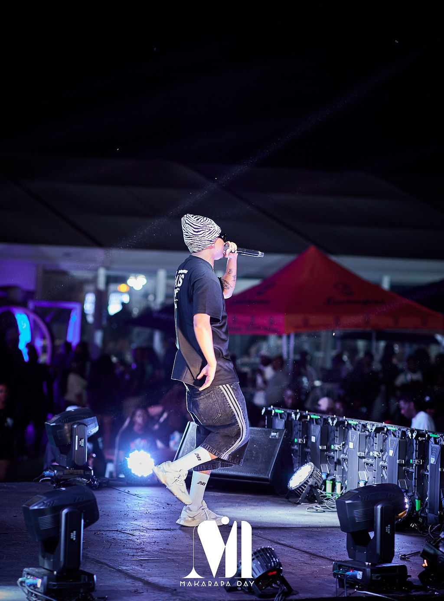
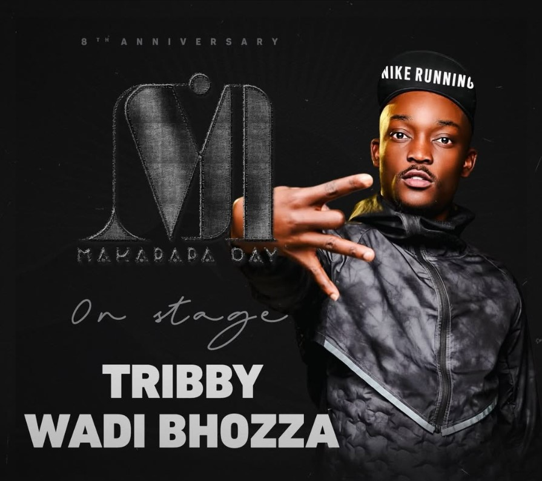
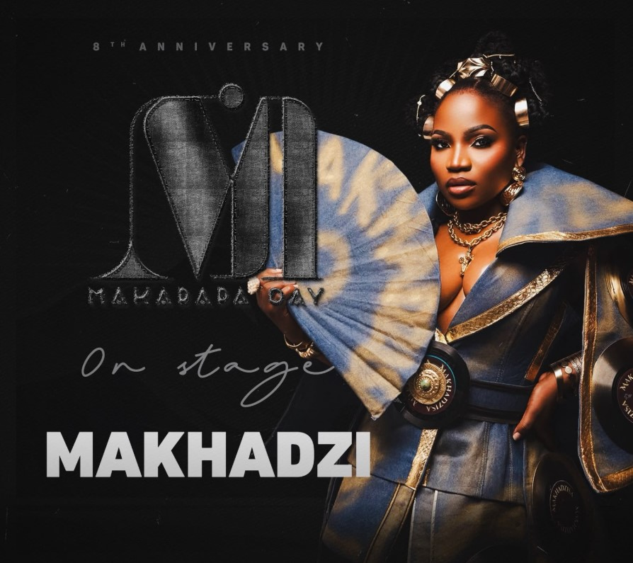

8th Annual / 2026Sekhukhune, Limpopo
The heart of Limpopo beats here
Colour ya manyora.
28 December 2026 × Uniq Shisanyama · Limpopo
Get your ticketsMusic. Culture. A night that stays with you.
01 / The movement
More than a day.
A whole feeling.
Makarapa Day is an event and marketing company rooted in Sekhukhune, Limpopo. We bring people together through music, culture and lifestyle experiences that celebrate who we are and where we come from.
Our annual festival is where it all comes alive: the stage lights, the sound, the style and the people. Beyond the festival, our community initiatives create space for local business, sporting talent and shared experiences.
Step into our world
8th Annual Makarapa Day×Uniq Shisanyama · Limpopo×28 December 2026×
02 / In the spotlight
The faces.
The sound. The energy.
The artists featured on Makarapa Day’s page. Follow our channels for performance announcements and event updates.
Jussgigi
SPOTLIGHT
Tribby Wadi Bhozza
SPOTLIGHT
Makhadzi
SPOTLIGHTArtist spotlight from the supplied Makarapa Day website. Follow official announcements for the latest 2026 performance schedule.
04 / The moments we live for
No filter.
Just the feeling.
Previous editions. Same unmistakable energy.Tap a moment to expand ↗
05 / Partnerships & investments
Build with us.
Be part of the culture.
Bring your brand into the Makarapa Day experience. Connect with an engaged community through meaningful activations, event partnerships and investment in local initiatives.
Brand activations 01
Event partnerships 02
Community investment 03
The eighth chapter
For the people.
Beyond the party.
Our roots run deeper than the stage. Through outdoor experiences, local enterprise and grassroots sport, we bring the community together in ways that last beyond a single night.
The Makarapa Day Hike is part of that story. A chance to reconnect with nature, build friendships and move forward together.
Learn more↗